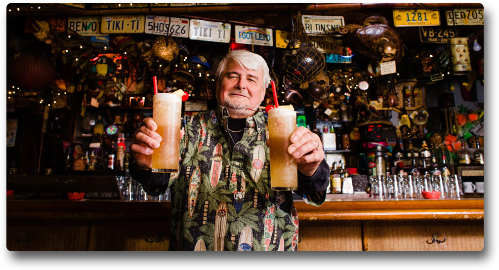

Misión
La Isla Restobar es mucho más que un bar, es una familia dispuesta a crecer mientras le brinda a sus clientes la mayor satisfacción con cada uno de sus servicios en coctelería, con un ambiente agradable y cómodo en el que podrán disfrutar de sus bebidas favoritas, buena música y un espacio bailable con una excelente atención para los invitados.
Visión
Nos vemos extendidos por todo el territorio nacional con locales bonitos, cómodos, innovadores y llamativos, abastecidos de los mejores licores y trabajadores capaces de brindar la mejor atención a nuestros clientes. Buscamos ofrecerle a jóvenes y adultos mayores la mejor alternativa en entretenimiento y garantizarle a la sociedad nuevas oportunidades de empleo para obtener un crecimiento colectivo.
¿Quienes somos?
Fieles a nuestra vocación de servir con excelencia y convencidos de que el eje de nuestra labor es el cliente y por lo tanto, merece ser atendido con la dedicación propia y la formación integral de quienes amamos brindarle bienestar. Esta iniciativa se inspiró en los miembros jóvenes, cuya dedicación y vocación de servicio merecen el importante complemento de la profesionalización, dado el rol esencial que esta actividad tiene en el grado de satisfacción de nuestros invaluables clientes. Pensando siempre en crecer y aportar a la sociedad, La Isla Restobar proyecta ir más allá, apoyando directamente con su asesoramiento la futura formación de todos aquellos jóvenes que, en general, decidan comprometerse y hacer del Servicio al Cliente su profesión, contribuyendo así al desarrollo de un nuevo enfoque que permita optimizar la atención que recibe el consumidor, posicionándola en el nivel de excelencia que éste merece. La Isla Restobar una empresa en constante búsqueda de servir más y mejor.
